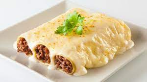
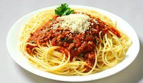

Abigail
Henry
Tarea de HTML / CSS
Mi comida favorita son los canelones, con salsa blanca.
Pueden ser rellenos de jamón y queso, de acelga o incluso de carne.
Aunque ultimamente estoy cuidando mi salud asique intento evitar este tipo de comidas.
Visite El Fondeadero.
- Canelones con salsa blanca

- Fideos con tuco
